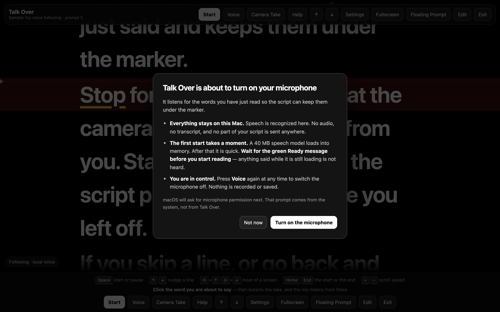
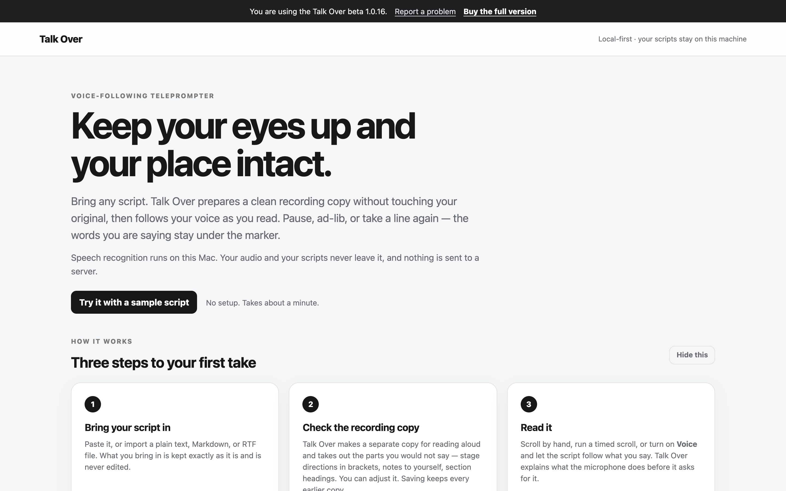
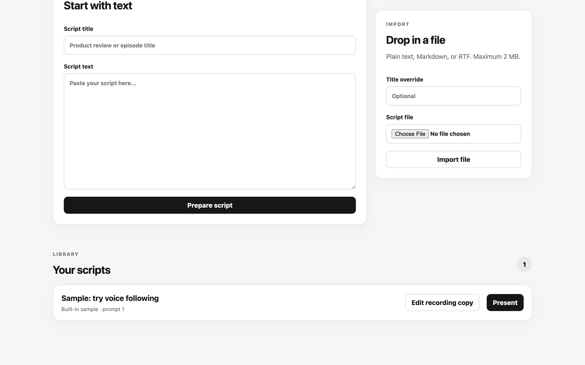
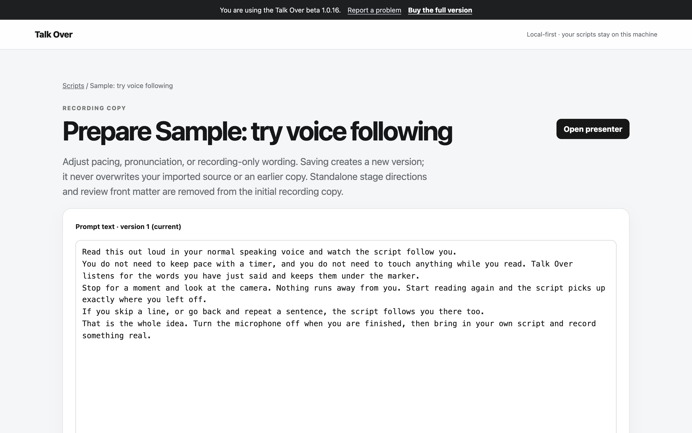
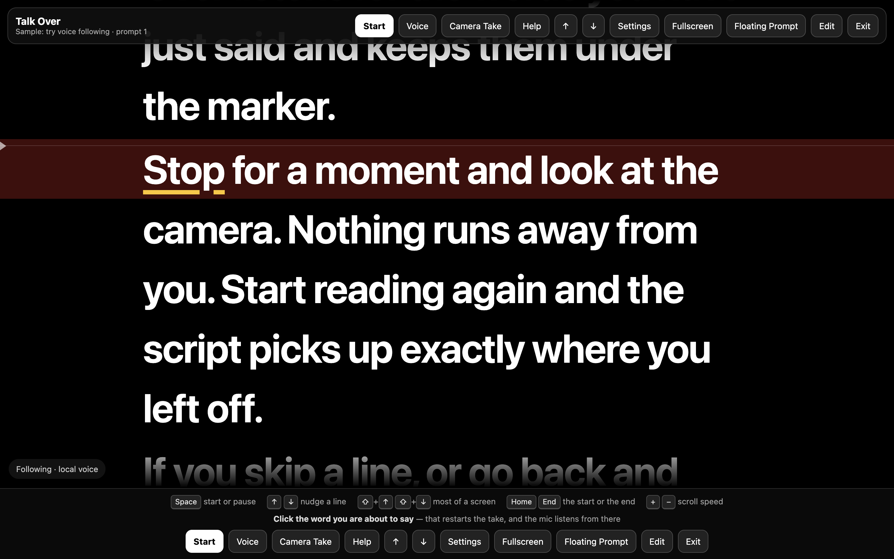
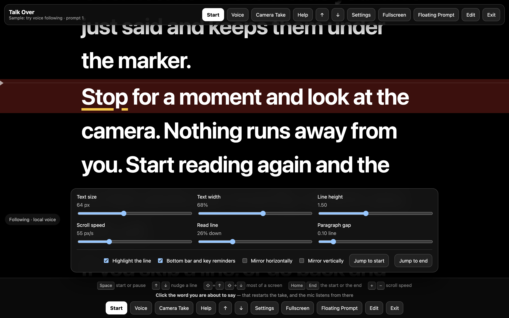
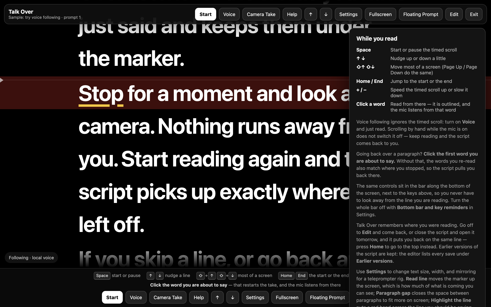
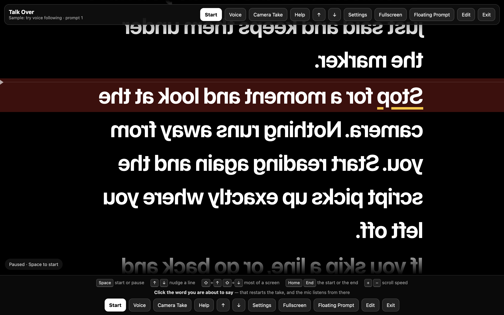
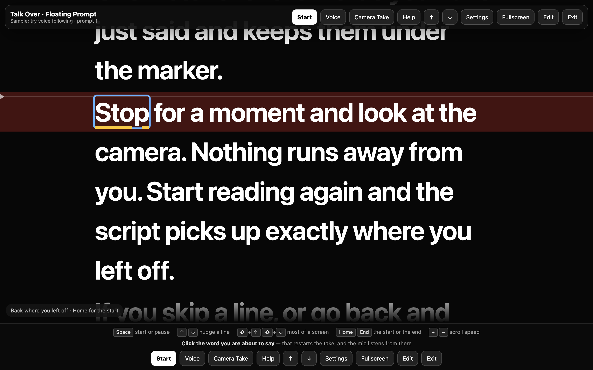
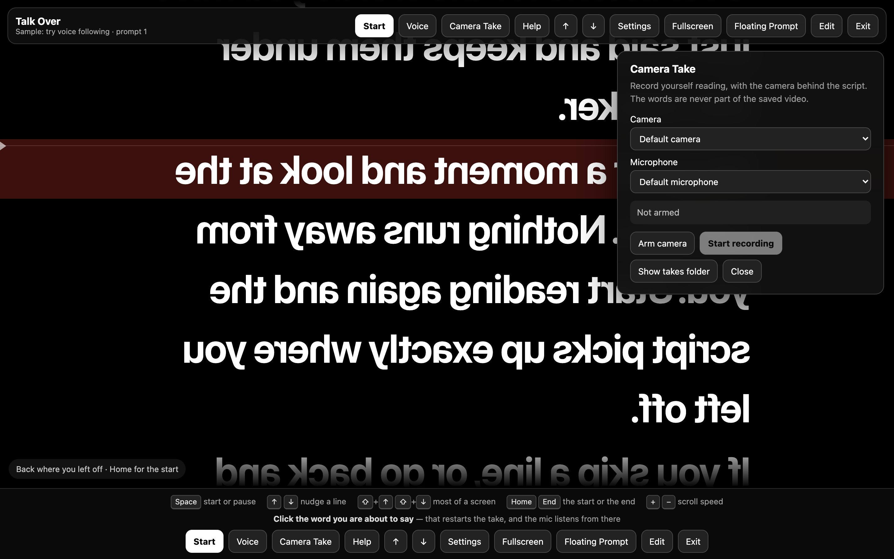

Installation & Use
Install it, then make it yours.
Download Talk Over, drag it to Applications, and start a script. The app runs on your Mac with no account and no separate voice download.
Before you download
- Mac
- Apple Silicon only: M1, M2, M3, M4 or later. Intel Macs are not supported.
- macOS
- macOS 11 Big Sur or later. macOS 13 or later recommended.
- Space
- About 250 MB free. The download is 63 MB; installed it is about 81 MB.
- Microphone
- Any built-in or external mic for voice-following. A camera is optional for Camera Take.
- Internet
- Needed only to download. Talk Over works offline.
Install Talk Over
- Download the free trial or purchase Talk Over.
- Double-click the downloaded file. A window opens showing the Talk Over icon and an Applications shortcut.
- Drag Talk Over onto Applications.
- Open Applications and double-click Talk Over.

The first time you open it
Talk Over appears in your Dock and a small TO icon appears in the menu bar. Your web browser then opens to the Talk Over screen. This is normal: Talk Over uses your browser as its window while still running entirely on your Mac.
The first time you start voice-following, macOS asks for microphone permission. Allow it for voice-following to work. Camera Take separately asks for camera permission. If you clicked Don't Allow, open System Settings, choose Privacy & Security, select Microphone, enable your browser, then reload the Talk Over page.
Start using it
Paste a script and choose Prepare script, or drop in a .txt, .md, .markdown or .rtf file up to 2 MB. Select Present, then click Voice to have Talk Over start listening and scroll as you talk. You can re-read a line and Talk Over will understand where you are and continue from there. You can skip lines you do not want to read, too.
You can also click Start for a steady timed scroll, or use Manual to move through the script with the arrow keys. If you lose your place, click the word you want to start from. Talk Over restarts the take and listens from there.
Inside the app
What each screen is for.








